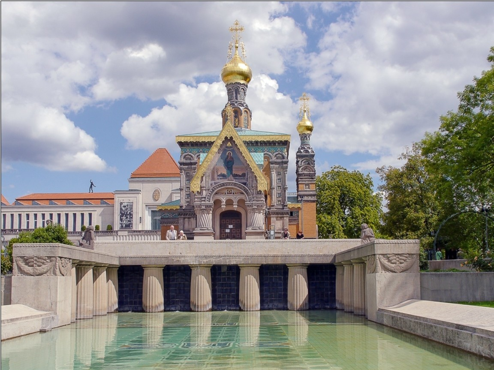

Russische Kapelle
Der Sakralbau wurde in den Jahren von 1897 bis 1899 nach Plänen des Petersburger Architekten Léon N. Benois (eigentlich Leonti Nikolajewitsch Benois), einem Großvater Peter Ustinovs, errichtet. Das zwischen verschiedenen Jugendstilgebäuden auf importierter russischer Erde errichtete Gotteshaus, in dem bis zum heutigen Tag orthodoxe Gottesdienste stattfinden, ist im Stil russischer Kirchen des 16. Jahrhunderts gehalten. Auftraggeber war der russische Zar Nikolaus II. von Russland, der bei Besuchen in der Heimat der Zarin Alexandra, gebürtige Prinzessin Alix von Hessen-Darmstadt, nicht auf ein eigenes Gotteshaus für seine Familie und seinen Hofstaat verzichten mochte.